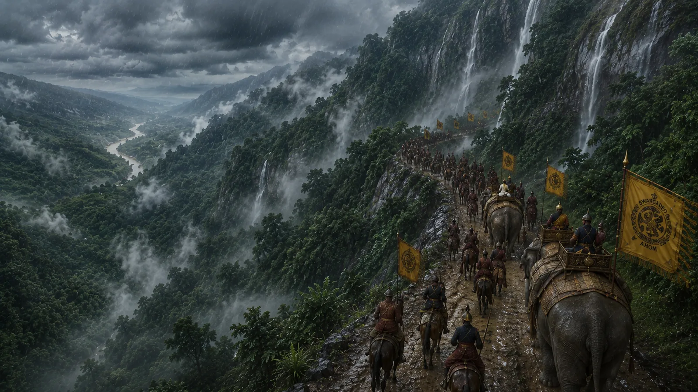

Crossing the Patkai Hills
1228 · The coming of Sukaphaa

Sukaphaa and his vanguard conquer the steep, dense subtropical mountain rainforests of the Patkai Range (Pangsau Pass), outmaneuvering hostile hill tribes and arriving at Khamjang on the border of Assam.
Sources have not yet been catalogued for this record.
People: Chaolung Sukaphaa